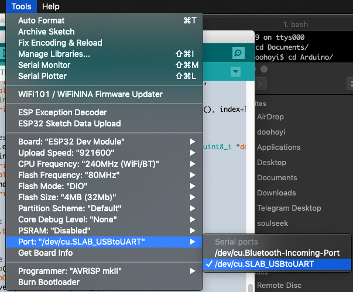

Solarpunks
hardware setup
In these slides we'll guide you to installing, setting-up and uploading the HTML files to the ESP32 modules...
We will following these steps, some are optional:

Add ESP32 boards
Adding ESP32 boards to the Arduino IDE's board list.
Open the Arduino Preferences under Edit > Preferences (Linux and Windows), or Arduino > Preferences (Mac).
Copy and paste the following into 'Additional Boards Manager URLs' and click 'Ok'.

https://dl.espressif.com/dl/package_esp32_index.json
Launch the Board Manager


Search for ESP32

And click "Install"
Install the ESP32 driver
Installing a USB device driver to communicate with the ESP32 module (chip name: SiliconLabs CP2012)
Linux driver
Linux 3.x.x & 4.x.x
- Driver installation not required (included in kernel)
Linux 2.6.x
- Linux 2.6.x - No information
Restart your computer.
[continue →→→ ]
Mac driver
Download the driver: Silabs USB communication chip driver download
For very old versions of MacOS (Yosemite/10.10.x) a legacy driver must be installed, instead normal one. Download Legacy SiLabs driver
Doubleclick "Install CP210x VCP Driver.app" to install it.
When it gives a security message, follow the instructions to allow the install to continue.
Restart your computer.
Gatekeeper (MacOS)
After restarting, make sure GateKeeper does not interfere with driver loading.
- System Preferences -> Security & Privacy -> General

Gatekeeper (MacOS)

If there is an error message in the red box area, GateKeeper is interrupting the driver's operation. If this is the case, click 'Allow' and confirm with administrator password, then restart your computer.
Check driver
After starting the Arduino IDE, make sure it can communicate with the ESP32 module
If communication is possible, there should be a new entry in the port list as shown in the picture below. On MacOS it will be called something like /dev/cu.SLAB_USBtoUART for other OSes this name might be different.
Install SPIFFS plugin
The content of the small webpage we will put on the wifi modules is stored separately from the running code that takes care of publishing it. Therefore, it goes through a separate process from the usual Arduino IDE code upload process. To do this, you need to install a separate extension plug-in.